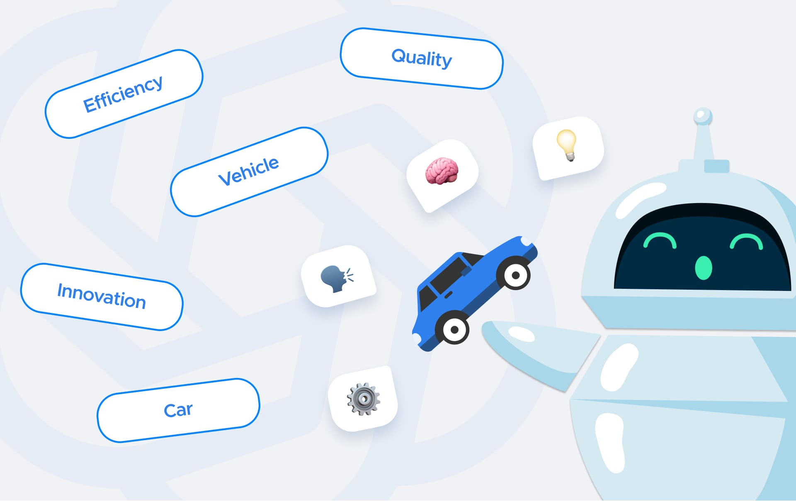

Objetivo del Proyecto
Desarrollar una aplicación conversacional que permita a usuarios buscar vehículos mediante lenguaje natural. El sistema debía ser capaz de interpretar consultas como "necesito un SUV rojo por menos de $10,000" y devolver resultados relevantes con documentación de fuentes.

Problema Abordado
Los sistemas tradicionales de búsqueda de vehículos requieren que el usuario conozca y utilice filtros exactos (marca, modelo, año, precio). Esto limita la experiencia cuando el usuario tiene una idea general de lo que busca pero no conoce los parámetros específicos. Este proyecto resuelve el problema permitiendo búsquedas en lenguaje natural sobre un dataset de 38,531 vehículos con 30 atributos cada uno.
Decisiones Técnicas
- Se eligió RAG (Retrieval Augmented Generation) sobre filtrado tradicional para permitir consultas semánticas flexibles
- FAISS (Facebook AI Similarity Search) para indexación eficiente de 38,531 embeddings vectoriales
- GPT-4o-mini como modelo de lenguaje por su balance costo/rendimiento
- Implementación de un SummaryBufferMemory custom que mantiene los últimos 1,000 tokens verbatim y resume automáticamente el historial anterior
- Arquitectura desacoplada: backend FastAPI + frontend React comunicados via REST API
Tecnologías y Metodologías
Backend
Frontend
Metodología
Datos
Dataset de 38,531 vehículos con 30 atributos (marca, modelo, año, precio, color, tipo de carrocería, combustible, etc.)
Arquitectura del Sistema
- El usuario envía una consulta en lenguaje natural
- La consulta se convierte en un vector de embeddings usando text-embedding-3-small de OpenAI
- FAISS busca los 5 vehículos más similares semánticamente en el índice vectorial
- Los datos de los vehículos recuperados se formatean como contexto
- GPT-4o-mini genera una respuesta en lenguaje natural usando el contexto + historial de conversación
- El SummaryBufferMemory actualiza el historial, comprimiendo mensajes antiguos automáticamente
Demo
Resultados Obtenidos
- Tiempo de respuesta rápido
- Interfaz responsive con indicador de typing en tiempo real
- Capacidad de manejar preguntas de seguimiento con contexto ("¿Cuál es el más barato de los que me mostraste?")
- Documentación completa de fuentes: cada respuesta puede mostrar los vehículos utilizados como referencia